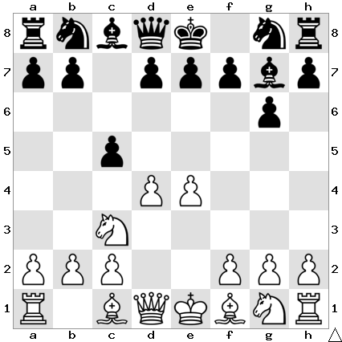

Overview
What is the Pterodactyl Defense
The Pterodactyl is a complex opening tool for black that can be played versus 1.e4 , 1. d4, or 1.c5.
It holds great similarities with the Sicilian defense, however you typically go for a more agressive
approach with short term gain. An early Queen developement on the A5 square along with a tripling of
the oppononents pawn structure is common.
The Pterodactyl is not one single line, but a collection of similarly themed responses to white's opening setup,
it has beem played against strong notable GM's and is suprisingly sound. There are multiple variations and responses
that can be played against (double pawn in the center) e4, and e5, which is responded to with 1.g6, 2.Bg7, and 3.c5.
